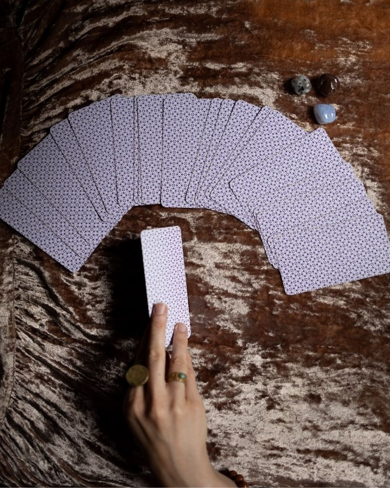
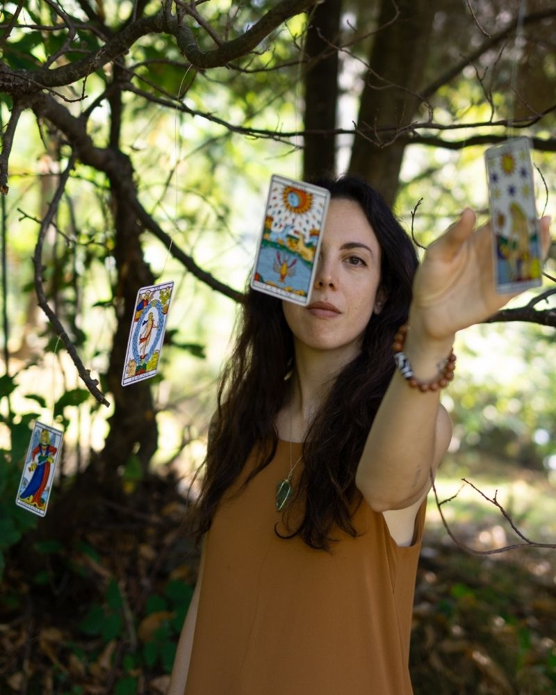

Il Tarot al servizio del Lavoro su di sé
Il Tarocco può insegnarti a vivere il presente con occhi nuovi, riscoprire la tua bellezza
e manifestare la tua verità più profonda.

Una sessione individuale, per portare chiarezza su un punto a te caro. Useremo il Tarot come specchio del tuo mondo interiore, non per predire il futuro, ma per illuminare ciò che c'è.
Ci prenderemo il tempo che serve. Per esperienza varia fra i 40 minuti e 1 ora e mezza.
Costruiremo insieme la tua domanda, ascolteremo le carte e tradurremo insieme il loro messaggio, perché possa diventare una risorsa nella tua vita quotidiana.
Il Tarocco diviene strumento di lavoro su di sé, non prende decisioni al posto tuo perché la responsabilità della tua vita è nelle tue mani, ma ti fornisce chiavi di volta e strumenti indispensabili alla tua crescita.
Cammini strutturati nel tempo, adattabili alle tue esigenze,
per accompagnarti verso la tua verità.
Un lavoro profondo attraverso la stesa dell'anno, che invita alla convivenza con un arcano al mese. Un accompagnamento lento per imparare a riconoscere le energie del Tarot dentro di te e nella vita, usandolo come specchio e mappa. Dispense ed esercizi ad ogni incontro.

Un mese di convivenza per arcano, quando vorrai, anche non consecutivo, anche un solo mese. Pescato o scelto con criterio. Esercizi e stese per risvegliare la sua energia dentro di te, integrare i suoi insegnamenti e imparare a riconoscerlo nella vita quotidiana. Dispense ed esercizi.
Non devi farcela da sola.
Posso affiancarti in questo cammino,
con percorsi costruiti sui tuoi bisogni più profondi,
dove il Tarot sarà la mappa per ritrovare chiarezza, direzione e pace.